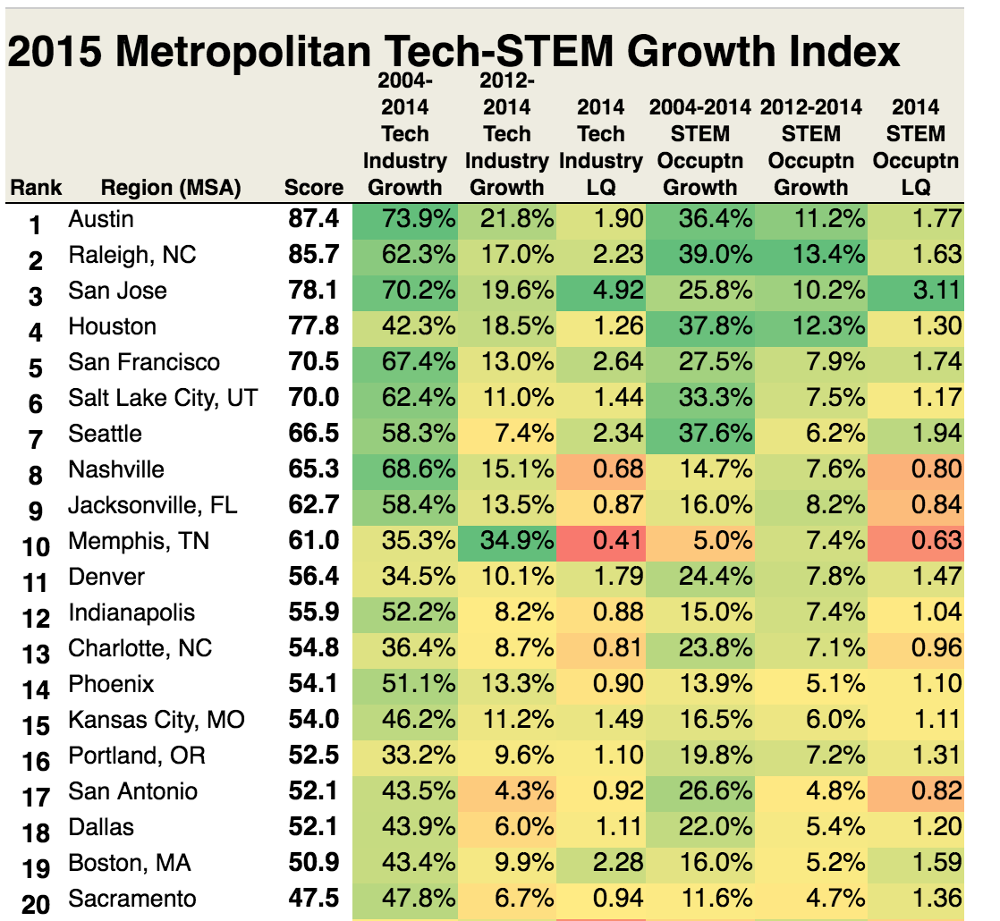

Tariq Boujja
I'm an SDET student, welcome to my website!

I'm an SDET student, welcome to my website!
It doesn't matter if salaries are high in an area if you can't find a job there. That's why it's important to know which cities have a high number of software development job openings.
